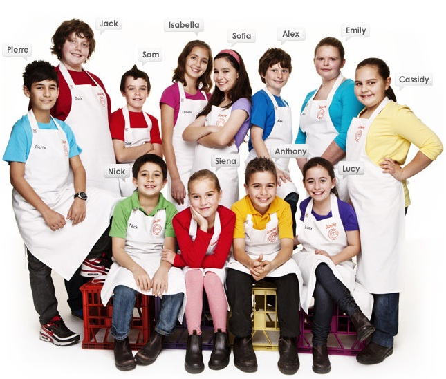
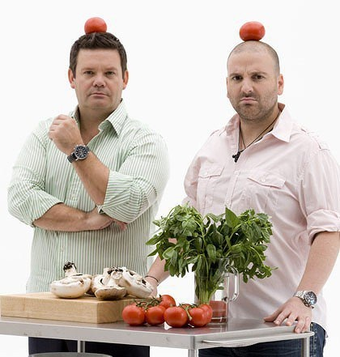
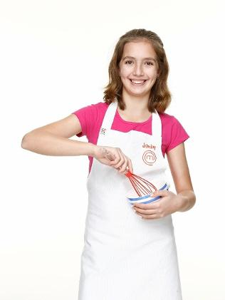
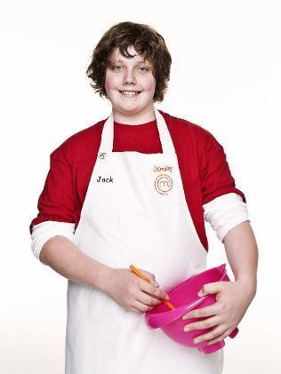
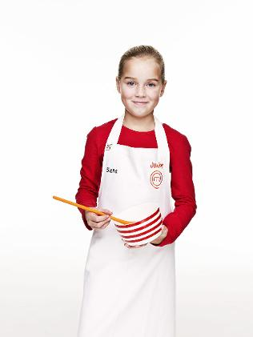

Versión Australia |
|
Clic en la imagen para ver el Capítulo 1 de la Temporada 1 |
Presentadores: Gary Mehigan y George Calombaris |
SinopsisJunior MasterChef Australia es un reality de cocina cuyos participantes son niños de 8 a 12 años. La primera temporada comenzó su producción en julio de 2010 con 50 participantes. Más de 50.000 niños se presentaron a la convocatoria.(Tomado de Wikipedia.) |
|
Protagonistas | ||
Isabella Bliss |
Jack Lark |
Sienna Johnston |